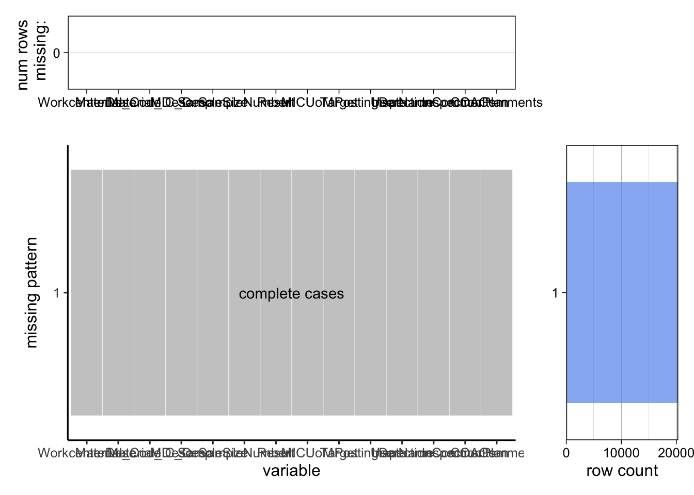
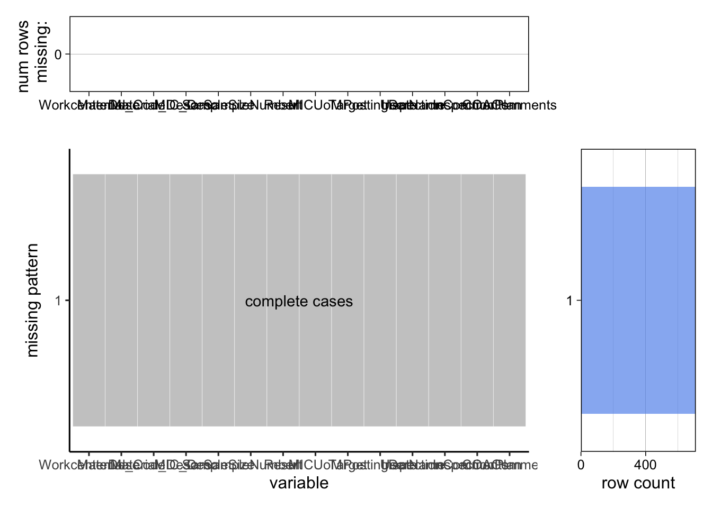

Chapter 3 Data
3.1 Sources
Our data is retrieved from Sabert internal Statistical Process Control (SPC) system. We choose to study the daily product exception data, which is data for products that are out of specification or rejected by Quality technicians. Data was collected by the Quality technicians on a daily basis, at least four times per shift, and entered into the computer data collection system SPC. Based on our study, there are two general types of data collected in the system – variables and attributes. Variables include Part Weight, Silicone Ratio, Wall Thickness Top, Wall Thickness Bottom, Haze, and Color which are measurable in numeric format. Attributes include Visual Evaluation, Form, Registration, Angel Hair, Perforation Test, Lid Fit, Label Test, Antifog Test, etc. Which are evaluated by personal judgment and deemed as pass or fail. The exception dataset we are studying includes only reject data for Attributes, or out-of-specification range data for Variables. We choose those data because they are direct measurements and indicators of defective products that are produced in the manufacturing plant every day. Studying those data can help the Quality department find significant defect patterns, unreliable machine processes, and potential correlations between different Variables/Attributes to tackle stubborn issues.
We picked three months of production Quality data for our research. This includes 27,187 Exception observations. We believe this is a substantial enough data set after evaluating the diversity of the data, consulting the employees in the company, and learning the product and manufacturing features of the plant.
The data include the following key information we are interested in: Machine Line #, Item/Material #, Item/Material description, MIC Characteristic Description, Sample#, Result, Lower Specification Limit, Target, Upper Specification Limit, Posting Date, and Inspection Plan. In the raw data set, each row is an Exception observation with the above information listed as columns. Although the data set has a tidy data feature where every column is a variable and every row is an observation, since it contains too many columns, it is important to select the variables we would study, which are supposed to be value-added. There is also an opportunity to drop duplicates since many rows contain the same information. We will discuss that in the section below.
3.2 Cleaning / transformation
First, we found it has duplicates in the Attributes data. So we dropped the duplicate rows of the same machine, same item, and same time of Attributes data, because their results are all the same “reject” so there is no value to include all of them.
Secondly, in order to analyze the Variables and Attributes Exception data independently, we separated the data into two data frames - Variable Dataframe -> dfn_variable and Attribute Dataframe -> dfn_attribute.
Thirdly, we study variables by doing the operation (Result – Target)/Target to calculate the difference ratio of an observation result versus target. This is because, for example, products in the company have very different weight targets intrinsically, if simply plotting all product part weight results together, they will have ununiformed scales, and will be incomparable or meaningless to compare. So it is essential to rescale the results, into a difference ratio so that we are retrieving one product’s results that differ from its own target and compare all items after they are standardized.
3.3 Missing value analysis
While drawing the missing value graphs, we found that there are three types of missing values in the dataset.In the Attribute data frame, all values in the Target column are NA, because there is not a real target for it. So we choose to fill the column with 0. In the Variable data frame, there are some rows without value in Target, those are the characteristics without target value and their appearance is very trivial in the dataset, so we chose to drop those rows. Also, we found the LSL and USL columns have missing values, since we do not study those features, we chose to drop the two columns completely.
## Target LSL USL WorkcenterDesc
## 0.2256 0.1422 0.0834 0.0000
## Material_Code Material_Desc MIC_Desc SampleSize
## 0.0000 0.0000 0.0000 0.0000
## SampleNumber Result MICUoM PostingDate
## 0.0000 0.0000 0.0000 0.0000
## UserName InspectionComments InspectionPlan COAComments
## 0.0000 0.0000 0.0000 0.0000
## LSL Target USL WorkcenterDesc
## 100 100 100 0
## Material_Code Material_Desc MIC_Desc SampleSize
## 0 0 0 0
## SampleNumber Result MICUoM PostingDate
## 0 0 0 0
## UserName InspectionComments InspectionPlan COAComments
## 0 0 0 0## WorkcenterDesc Material_Code Material_Desc MIC_Desc
## 0 0 0 0
## SampleSize SampleNumber Result MICUoM
## 0 0 0 0
## Target PostingDate UserName InspectionComments
## 0 0 0 0
## InspectionPlan COAComments
## 0 0